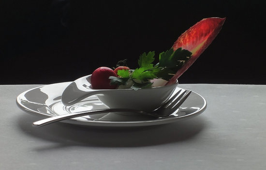
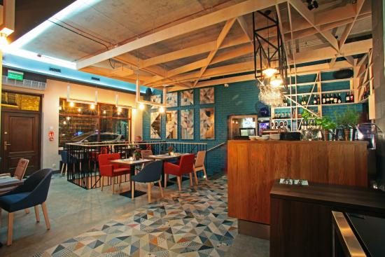
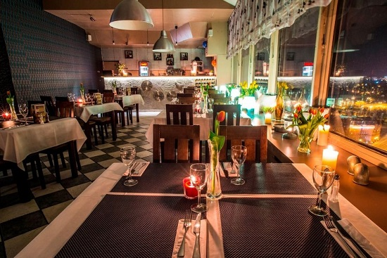

Restauracja Fellini
30.12.2019 | 19:34:39 | MM
Fellini to włoska restauracja na gdańskiej starówce. Z okien roztacza się piękny widok na Motławę oraz Filharmonię Bałtycką na Ołowiance. To niezwykłe i klimatyczne miejsce, w którym mogą Państwo miło spędzić czas oraz skosztować pysznych dań kuchni włoskiej. Każdy Gość jest dla nas wyjątkowy. Wizyta w Restauracji Fellini to wyjątkowe doświadczenie kulinarne, które spełni oczekiwania nawet najbardziej wyrafinowanych smakoszy. Nasze potrawy przygotowujemy w oparciu o najlepsze produkty prosto z Włoch. Oprócz dań z menu, codziennie na tablicy znajdą Państwo potrawy polecane przez naszego Szefa Kuchni, możemy też przygotować danie na specjalne życzenie. Doskonałym dopełnieniem każdego posiłku będzie z pewnością lampka włoskiego wina, którego bogaty wybór znajdą Państwo w naszej karcie.

Pomelo Bistro
Nie wiesz gdzie pójść ze znajomymi? Gdzie wypijesz dobre regionalne piwo i zjesz Å›wieże i dobre jedzenie? 🤔 Odpowiedź jest prosta! Pomelo! 💥 Codziennie od 13:30 zjesz u nas zawsze Å›wieże, robione na miejscu dania, peÅ‚ne przetworów i mocy! Bierz znajomych i wpadaj! 🙌
FRestauracja Bazar
Nasza restauracja posiada specjalistyczne zaplecze kuchenne, które pozwala na przygotowywanie posiłków serwowanych na największych imprezach masowych Północnej Polski – targów, wystaw, czy koncertów. Jesteśmy też wyłącznym operatorem Amber EXPO, a nasza elastyczna oferta cateringowa odpowiada na indywidualne potrzeby klientów.

Byłeś już w Gdańsku? Podziel się swoimi doznaniami z innymi!
Marysia | 10.03.2019 | 19:39:01 Byłam polecam z całego serca!!
Papież | 10.03.2019 | 19:40:00 Było super
Komentarze czytelników